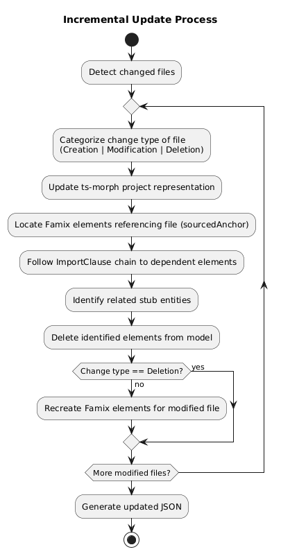

Automation is key in modern development, as easier access to tools can significantly boost productivity. One practical example is VSCode extensions. During my summer internship in 2025, I developed a VSCode extension to simplify the use of ts2famix. The extension enables developers to generate Famix models for the Typescript projects directly in VSCode and keeps these models automatically updated as the code evolves.
Assumptions
This post assumes you already have familiarity with ts2famix and a basic understanding of VSCode extensions. We will focus on explaining the key aspects of the extension and provide a detailed exploration of the incremental update feature. We’ll also discuss potential enhancements and improvements for future implementation.
This extension aims to:
- Simplify creating the model from scratch
- Update the model incrementally each time a file is saved, thereby saving time and automating the workflow
Project Overview
The project follows the standard client-server architecture outlined in the Language Server Extension Guide and consists of two main components:
- Server: Uses the
ts2famixlibrary to generate or update the famix model. - Client: Monitors changes in the TypeScript project and triggers incremental updates. It also provides commands to regenerate the model from scratch and lets the user configure where the JSON file is saved.
Communication between the client and server is handled via the Language Server Protocol (LSP).
Incremental Update Feature
Incremental Update Workflow
The incremental update process follows this workflow:
- Change Detection: For each modified file, categorize the change type (creation, modification, or deletion)
- Project Synchronization: Update the ts-morph project representation with the current file content
- Famix Element Processing:
- Identification: Locate all Famix elements that reference the modified file through their
sourcedAnchorfield - Dependency Tracing: Follow the
ImportClausechain to find all dependent elements - Stub Management: Identify any related stub entities that may be affected
- Element Removal: Delete all identified elements from the model
- Identification: Locate all Famix elements that reference the modified file through their
- Targeted Regeneration: For non-deletion changes, recreate the necessary Famix elements for the modified file
- Model Serialization: Generate an updated JSON representation and persist it to the configured storage location
This workflow is also demonstrated on the next diagram: 
{kind=link}
Now let’s examine the design decisions behind this workflow in more detail, starting with how we determined the appropriate level of change processing.
Operating Granularity: Choosing the Right Level of Change Processing
One of the first development decisions was determining at what level we should process changes in the TypeScript code.
We considered three options:
- Node level: Operating on individual AST nodes
- File level: Processing entire files
- Full regeneration: Rebuilding the entire Famix model from scratch
We decided against the node level approach because it would require significantly more complex logic.
The full regeneration option already exists as a command that users can invoke when they need to rebuild the entire model, such as when something goes wrong or when they want a fresh start.
We ultimately chose the file level approach for several reasons:
- Simpler implementation: We can reuse the same code that generates the Famix model from scratch
- Practical necessity: File-level operations are unavoidable for actions like file creation or deletion, where we need to add or remove all elements for a specific file
This approach does have limitations. We must carefully prevent element duplication by ensuring all stored state stays synchronized during incremental updates. This represents a trade-off between state management and logic complexity - we minimize intermediate state storage to avoid duplication issues, though this makes it more challenging to create logic that works for both initial model creation and incremental updates.
Removing and Recreating Elements
Our approach is to remove the outdated Famix elements and recreate them when files change. While conceptually simple, this raises an important question: how do we identify which elements need to be updated in such a way?
Since we operate at the file level, we need to find all elements created from a specific file. This requires tracking which elements correspond to which files.
Approaches Considered for Element Tracking
Initial Approach: File-Based Mapping
We first considered creating a mapping between each file name and its generated elements. The process would work like this:
- Start processing a file
- Set the current file name as context
- Add each new element to a list associated with this file name
- Process the next file once completed
However, this approach had two significant problems:
- It requires maintaining additional state that must be kept synchronized
- More importantly, it breaks when processing elements from different files simultaneously
Consider this inheritance example with two files:
a.ts:
import { B } from './b';
class A extends B { }b.ts:
export class B { }If we process a.ts first and haven’t yet created the Famix element for class B, we’d check for B’s existence, create it on-demand, and incorrectly associate it with a.ts rather than b.ts.
The Current Approach: Using Source Anchors
Ts-morph elements aren’t necessarily processed in sequential file order. Elements from different files might be processed concurrently, rather than completing all elements from one file before starting the next.
Given this behavior, we need to determine the source file for each element individually. Fortunately, we already have a mechanism for this through the IndexedFileAnchor, which exists as a sourcedAnchor field in most Famix elements. We can leverage this existing data structure to track which elements belong to which files.
This approach does have a minor downside: it somewhat violates the Single Responsibility Principle, as we’re using the anchor for both source location and element tracking. However, we assessed this as a low risk since the structure of ts2famix elements and their sourcedAnchor field is unlikely to change significantly.
The Challenge with Elements Lacking Source Anchors
A common limitation across all approaches is that some Famix elements don’t have a sourceAnchor. The PrimitiveType is a prime example. As an optimization, we create primitive types (void, boolean, number, string, etc.) only once and reuse them across multiple files. Consequently, these elements don’t have a sourcedAnchor pointing to any specific file.
This creates an edge case: if we remove the only file containing a particular primitive type, that type will remain in the repository even though it no longer exists in the TypeScript code. Over time, this could lead to orphaned primitive types in the model.
For the current implementation, we’ve prioritized other aspects of the incremental update. In future iterations, we might implement a tracking mechanism, such as a map where each primitive type is associated with a list of files that use it, or develop an alternative approach to address this issue.
{kind=link}
{kind=link}
{kind=link}
Further Development and Optimization
The next stages of development will focus on extending incremental update support to other element types.
There are also several aspects of performance and speed that can be improved.
Currently, the main bottleneck of the extension is that it recreates the model from scratch every time the VSCode extension starts. This creates two significant problems:
- Slow Startup: The extension takes considerable time to recreate the model before it can perform incremental updates.
- Memory Usage: We need to keep the entire Famix model in memory to run incremental updates. For large projects, this is inefficient in terms of memory consumption.
To address these issues, we’re considering the following approaches:
Loading the Model on Startup
Instead of recreating the model from scratch when opening the extension, we could serialize it, store it, and then retrieve it later. This approach requires addressing several considerations:
- How to handle cases where the project has changed since the last serialized model was saved (e.g., through external tools)
- Which events should trigger model serialization and storage
- Where to store the model
It’s important to note that while we can currently generate JSON files with the model for analysis purposes, these files aren’t suitable for model persistence because they don’t preserve all element fields. When exploring storage options, the workspace storage API offers a promising solution.
Reducing Memory Requirements
The more challenging problem is finding ways to avoid holding the entire model in memory. This area requires further research to identify the best approach.
These two challenges are interconnected, and it’s important to develop a solution that addresses both effectively.
Conclusion
In this post, we’ve discussed the design and challenges of implementing the incremental update feature for the Famix model. While the current solution isn’t finished, it establishes a foundation for future enhancements and optimizations.